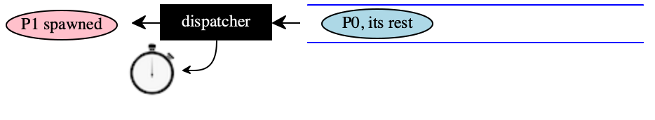

29 —
Tuesday, 21 April 2020
An operating system is a collection of things that don’t fit into a language. There shouldn’t be one. – Dan Ingall, Byte Magazine 1991
Dan Ingall was a member of the team that produced SmallTalk, the very first object-oriented programming language. (Okay, I don’t like Simula67.)
Sharing Resources, Sharing Time
No matter how “wealthy” our computers become, some computational resource (time, energy, storage memory, printers, network access, etc) will always be scarce. It is the task of the operating system to play arbiter—
market in economic terms— to match demand for a resource with supply.
The Big Picture
The dispatcher is the first small piece of software that exists. It uses its time slice to observe an associated queue. When a process shows up in the queue, the dispatcher sets up this first process to run. A process may spawn other processes, an act that means that a new program is added to the end of the queue. If the currently running process exhausts its allocated slice of time on the CPU before it completes its computation, the dispatcher’s alarm goes off and the rest of the current process’s computation is turned into a new process, which is added to the end of the queue.
The first three rows of the following table illustrate how this phase of process-dispatching works:
FOO
|
| the dispatcher exists, Process 0 was added to the queue |
|
| Process 0 is first in the queue and is thus run |
|
| Process 0 “spawns” Process 1 |
|
| Process 0 does not complete in the allotted time, swap out |
|
| the spawned Process 1 is given a chance |
 |
| eventually many processes are in the queue and one running |


Processes cannot only spawn another process, they may also suspend themselves because there is no work to do; they can request that other processes suspend themselves or even kill themselves.Do read up on why Java deprecated the thread-kill procedure.
This lecture will give you only a first impression of the demands that this process management places on the implementation language.